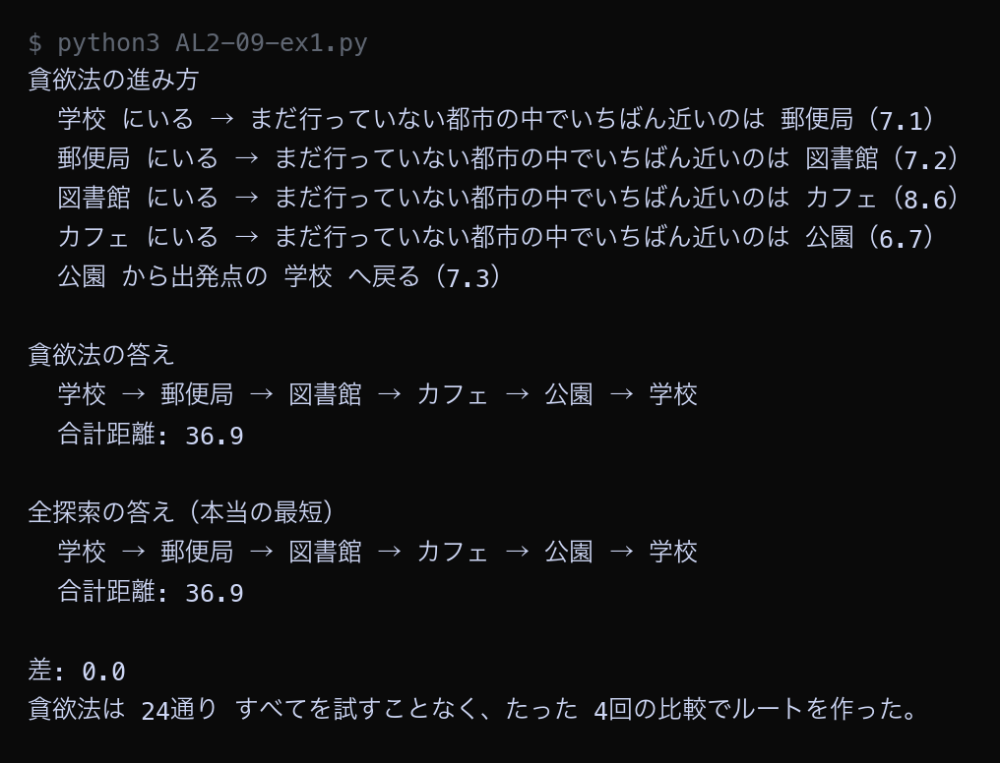
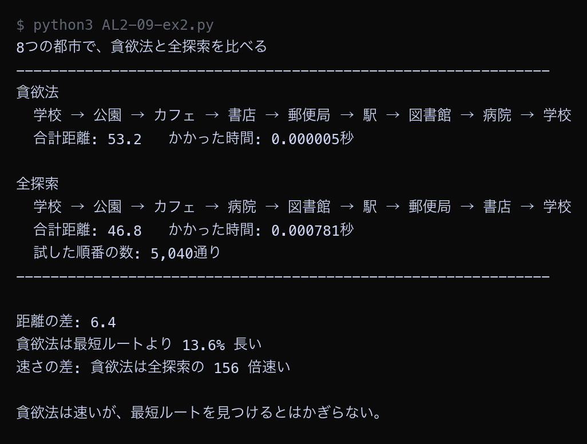

例題
例題1から例題4までのコードを実行してください。まず作業フォルダを用意します。
VS Code でフォルダとファイルを用意する
Step 1: 作業フォルダを作る
- デスクトップに AL2 という名前のフォルダを作る（後期の授業ではずっと同じフォルダを使う）
- AL2 フォルダの中に No09 という名前のフォルダを作る
└── AL2/
├── No08/ ← 前回のファイル
└── No09/ ← 第9回はここに保存
Step 2: VS Code でフォルダを開く
- Visual Studio Code を起動する
- メニューから 「ファイル」→「フォルダーを開く」を選ぶ
- Step 1 で作った AL2/No09 フォルダを選んで開く
左側のエクスプローラーに No09 フォルダの中身が表示される（最初は空）。
Step 3: 例題ごとにファイルを作って実行する
- 左側エクスプローラーの No09 の横にある 新しいファイルアイコンをクリック
- ファイル名を入力して Enter（例題1なら
AL2-09-ex1.py） - 例題のコードブロック右上の コピーボタンをクリック
- VS Code の編集画面に 貼り付ける（Ctrl+V / Cmd+V）
- 保存する（Ctrl+S / Cmd+S）
- 右上の ▷（再生ボタン）をクリックして実行する
今回作るファイル: AL2-09-ex1.py, AL2-09-ex2.py, AL2-09-ex3.py, AL2-09-ex4.py
今回のキーワード
| 用語（読み方） | 説明 |
|---|---|
| 貪欲法 どんよくほう / greedy algorithm | 先のことを考えず、その時点でいちばん良さそうな選択をくり返す方法。速いが最適とはかぎらない。 |
| 最近傍法 さいきんぼうほう / nearest neighbor | 巡回セールスマン問題に貪欲法を使ったもの。いまいる都市からいちばん近い都市へ進む。 |
| 局所最適 きょくしょさいてき / local optimum | 部分的にはいちばん良いが、全体で見るといちばん良いとはかぎらない状態。 |
| 近似解 きんじかい / approximate solution | 最適解ではないが、実用上じゅうぶん良い答え。速く求められることが利点。 |
| 最適解 さいてきかい / optimal solution | 考えられる中で本当にいちばん良い答え。全探索や動的計画法で求まる。 |
貪欲法で5都市を解く
第8回と同じ5つの都市に、貪欲法を使います。 「いまいる都市から、まだ行っていない都市のうちいちばん近いところへ進む」をくり返すだけです。 全探索の答えと比べます。
Python ── AL2-09-ex1.py # 貪欲法（どんよくほう）で巡回セールスマン問題を解く # 作戦はとても単純: 「いまいる都市から、まだ行っていない都市のうち # いちばん近いところへ進む」をくり返すだけ。 import math from itertools import permutations cities = [ ("学校", 2, 2), ("郵便局", 10, 3), ("図書館", 14, 9), ("カフェ", 6, 12), ("公園", 3, 8), ] n = len(cities) distance = [] for i in range(n): row = [] for j in range(n): d = math.sqrt((cities[i][1] - cities[j][1]) ** 2 + (cities[i][2] - cities[j][2]) ** 2) row.append(round(d, 1)) distance.append(row) def greedy(start): """いちばん近い都市へ進むことをくり返して、ルートを作る""" visited = [start] total = 0.0 here = start print("貪欲法の進み方") while len(visited) < n: # まだ行っていない都市の中で、いちばん近いものをさがす nearest = None for j in range(n): if j in visited: continue if nearest is None or distance[here][j] < distance[here][nearest]: nearest = j print(f" {cities[here][0]} にいる → まだ行っていない都市の中で" f"いちばん近いのは {cities[nearest][0]}（{distance[here][nearest]}）") total = total + distance[here][nearest] visited.append(nearest) here = nearest total = total + distance[here][start] print(f" {cities[here][0]} から出発点の {cities[start][0]} へ戻る（{distance[here][start]}）") return visited, round(total, 1) def brute_force(): """全探索で最短ルートを求める（答え合わせ用）""" best_length = None best_order = None for order in permutations(range(1, n)): total = 0.0 here = 0 for city in order: total = total + distance[here][city] here = city total = total + distance[here][0] if best_length is None or total < best_length: best_length = total best_order = order return [0] + list(best_order), round(best_length, 1) def route_names(route): """ルートを都市名でつないだ文字列にして返す""" names = [cities[i][0] for i in route] names.append(cities[route[0]][0]) return " → ".join(names) greedy_route, greedy_length = greedy(0) print() print("貪欲法の答え") print(" ", route_names(greedy_route)) print(" 合計距離:", greedy_length) print() best_route, best_length = brute_force() print("全探索の答え（本当の最短）") print(" ", route_names(best_route)) print(" 合計距離:", best_length) print() print("差:", round(greedy_length - best_length, 1)) print("貪欲法は 24通り すべてを試すことなく、たった 4回の比較でルートを作った。")
▶ 実行結果

貪欲法は「学校 → 公園 → カフェ → 図書館 → 郵便局 → 学校」というルートを作り、合計は34.9でした。全探索で求めた最短も34.9なので、差は0です。ただし2つのルートをよく見ると、回る向きが逆になっているだけで、通る道はまったく同じです。貪欲法は24通りを試さず、たった4回の比較でルートを作っています。都市が5個と少ないため、たまたま最短に当たったという点に注意してください。
8都市で全探索と比べる
都市を8個に増やして、同じ比較をします。都市が増えると結果はどう変わるでしょうか。
Python ── AL2-09-ex2.py # 都市を8個に増やして、貪欲法と全探索を比べる import math import time from itertools import permutations cities = [ ("学校", 2, 2), ("郵便局", 10, 3), ("図書館", 14, 9), ("カフェ", 6, 12), ("公園", 3, 8), ("駅", 17, 4), ("病院", 12, 13), ("書店", 8, 7), ] n = len(cities) distance = [] for i in range(n): row = [] for j in range(n): d = math.sqrt((cities[i][1] - cities[j][1]) ** 2 + (cities[i][2] - cities[j][2]) ** 2) row.append(d) distance.append(row) def greedy(start): """貪欲法: いまいる場所からいちばん近いところへ進むことをくり返す""" visited = [start] total = 0.0 here = start while len(visited) < n: nearest = None for j in range(n): if j in visited: continue if nearest is None or distance[here][j] < distance[here][nearest]: nearest = j total = total + distance[here][nearest] visited.append(nearest) here = nearest total = total + distance[here][start] return visited, total def brute_force(): """全探索: すべての順番を試して、いちばん短いものを返す""" best_length = None best_order = None tried = 0 for order in permutations(range(1, n)): total = 0.0 here = 0 for city in order: total = total + distance[here][city] here = city total = total + distance[here][0] tried = tried + 1 if best_length is None or total < best_length: best_length = total best_order = order return [0] + list(best_order), best_length, tried def route_names(route): """ルートを都市名でつないだ文字列にして返す""" names = [cities[i][0] for i in route] names.append(cities[route[0]][0]) return " → ".join(names) began = time.time() greedy_route, greedy_length = greedy(0) greedy_time = time.time() - began began = time.time() best_route, best_length, tried = brute_force() brute_time = time.time() - began print("8つの都市で、貪欲法と全探索を比べる") print("-" * 62) print("貪欲法") print(" ", route_names(greedy_route)) print(f" 合計距離: {round(greedy_length, 1)} かかった時間: {greedy_time:.6f}秒") print() print("全探索") print(" ", route_names(best_route)) print(f" 合計距離: {round(best_length, 1)} かかった時間: {brute_time:.6f}秒") print(f" 試した順番の数: {tried:,}通り") print("-" * 62) print() difference = greedy_length - best_length ratio = greedy_length / best_length print(f"距離の差: {round(difference, 1)}") print(f"貪欲法は最短ルートより {round((ratio - 1) * 100, 1)}% 長い") print(f"速さの差: 貪欲法は全探索の {round(brute_time / greedy_time)} 倍速い") print() print("貪欲法は速いが、最短ルートを見つけるとはかぎらない。")
▶ 実行結果

貪欲法は53.2、全探索は46.8で、差は6.4でした。貪欲法のルートは最短ルートより13.6%長いという結果です。一方で速さは、貪欲法が全探索の約150倍でした。都市が5個のときは同じ答えでしたが、8個になると差が出ています。都市が増えるほど、貪欲法が最短に当たる可能性は下がっていきます。
出発点を変えると答えが変わる
貪欲法は出発点によって答えが変わります。 8つの都市それぞれを出発点にして、貪欲法を8回動かし、結果を並べて比べます。
Python ── AL2-09-ex3.py # 出発する都市を変えると、貪欲法の答えはどう変わるか import math from itertools import permutations cities = [ ("学校", 2, 2), ("郵便局", 10, 3), ("図書館", 14, 9), ("カフェ", 6, 12), ("公園", 3, 8), ("駅", 17, 4), ("病院", 12, 13), ("書店", 8, 7), ] n = len(cities) distance = [] for i in range(n): row = [] for j in range(n): d = math.sqrt((cities[i][1] - cities[j][1]) ** 2 + (cities[i][2] - cities[j][2]) ** 2) row.append(d) distance.append(row) def pad(text, width): """全角文字を2文字ぶんとして数え、右側に空白を足して表示の幅をそろえる""" length = 0 for ch in text: if ord(ch) > 0x2000: length = length + 2 else: length = length + 1 return text + " " * (width - length) def greedy(start): """貪欲法: いまいる場所からいちばん近いところへ進むことをくり返す""" visited = [start] total = 0.0 here = start while len(visited) < n: nearest = None for j in range(n): if j in visited: continue if nearest is None or distance[here][j] < distance[here][nearest]: nearest = j total = total + distance[here][nearest] visited.append(nearest) here = nearest total = total + distance[here][start] return visited, total def brute_force(): """全探索: すべての順番を試して、いちばん短いものを返す""" best_length = None for order in permutations(range(1, n)): total = 0.0 here = 0 for city in order: total = total + distance[here][city] here = city total = total + distance[here][0] if best_length is None or total < best_length: best_length = total return best_length best_length = brute_force() print("出発する都市を変えて、貪欲法の答えを比べる") print(f"（全探索で求めた本当の最短は {round(best_length, 1)}）") print("-" * 68) print(pad("出発する都市", 16) + pad("合計距離", 10) + "最短との差") results = [] for start in range(n): route, total = greedy(start) results.append((round(total, 1), start, route)) names = [] for i in route: names.append(cities[i][0]) print(pad(cities[start][0], 16) + pad(f"{round(total, 1)}", 10) + f"{round(total - best_length, 1):>7}") print(" " + " → ".join(names)) print("-" * 68) print() results.sort() # タプルの1つ目（合計距離）が小さい順に並べかえる print("いちばん良かった出発点:", cities[results[0][1]][0], "→", results[0][0]) print("いちばん悪かった出発点:", cities[results[-1][1]][0], "→", results[-1][0]) print() if results[0][0] == round(best_length, 1): print("書店から出発したときだけ、貪欲法が本当の最短ルートを見つけている。") print("出発点を変えるだけで答えが14以上も変わる。貪欲法は運に左右される。")
▶ 実行結果
![AL2-09-ex3.py の実行結果。出発する都市を変えて、貪欲法の答えを比べる / （全探索で求めた本当の最短は 46.8） / -------------------------------------------------------------------- / 出発する都市 合計距離 最短との差 / 学校 53.2 6.4 / 学校 → 公園 → カフェ → 書店 → 郵便局 → 駅 → 図書館 → 病院 / 郵便局 54.2 7.3 / 郵便局 → 書店 → 公園 → カフェ → 病院 → 図書館 → 駅 → 学校 / 図書館 61.2 14.4 / 図書館 → 病院 → カフェ → 公園 → 書店 → 郵便局 → 駅 → 学校 / カフェ 57.6 10.8 / カフェ → 公園 → 書店 → 郵便局 → 駅 → 図書館 → 病院 → 学校 / 公園 53.2 6.4 / 公園 → カフェ → 書店 → 郵便局 → 駅 → 図書館 → 病院 → 学校 / 駅 54.2 7.3 / 駅 → 図書館 → 病院 → カフェ → 公園 → 書店 → 郵便局 → 学校 / 病院 57.6 10.8 / 病院 → 図書館 → 駅 → 郵便局 → 書店 → 公園 → カフェ → 学校 / 書店 46.8 0.0 / 書店 → 郵便局 → 駅 → 図書館 → 病院 → カフェ → 公園 → 学校 / -------------------------------------------------------------------- / / いちばん良かった出発点: 書店 → 46.8 / いちばん悪かった出発点: 図書館 → 61.2 / / 書店から出発したときだけ、貪欲法が本当の最短ルートを見つけている。 / 出発点を変えるだけで答えが14以上も変わる。貪欲法は運に左右される。](images/a09_ex3_result.png)
出発点によって、貪欲法の答えは46.8から61.2までばらつきました。いちばん悪いのは図書館から出発した場合の61.2で、最短より14.4も長くなっています。注目すべきは書店から出発した場合で、答えは46.8となり、全探索で求めた最短と完全に一致しました。貪欲法は運に左右されるということです。この性質を利用して、すべての出発点で試して、いちばん良かった答えを採用するというやり方もよく使われます。それでも全探索よりずっと速く終わります。
貪欲法が大きく損をする配置
貪欲法が大きく損をする配置を作って、失敗のしかたを観察します。 配達先のうち1軒だけが、ほかから遠く離れた場所にある場合です。
Python ── AL2-09-ex4.py # 貪欲法が大きく損をする配達先の配置 # 遠くにぽつんと1軒だけ離れた家があると、貪欲法はその家を最後まで残してしまう。 import math from itertools import permutations houses = [ ("営業所", 0, 8), ("A宅", 1, 5), ("遠方のD宅", 11, 2), ("B宅", 6, 4), ("E宅", 0, 12), ("C宅", 5, 9), ] n = len(houses) distance = [] for i in range(n): row = [] for j in range(n): d = math.sqrt((houses[i][1] - houses[j][1]) ** 2 + (houses[i][2] - houses[j][2]) ** 2) row.append(d) distance.append(row) def greedy(start): """貪欲法: いまいる場所からいちばん近いところへ進むことをくり返す""" visited = [start] total = 0.0 here = start steps = [] while len(visited) < n: nearest = None for j in range(n): if j in visited: continue if nearest is None or distance[here][j] < distance[here][nearest]: nearest = j steps.append((houses[here][0], houses[nearest][0], round(distance[here][nearest], 1))) total = total + distance[here][nearest] visited.append(nearest) here = nearest steps.append((houses[here][0], houses[start][0], round(distance[here][start], 1))) total = total + distance[here][start] return visited, total, steps def brute_force(): """全探索: すべての順番を試して、いちばん短いものを返す""" best_length = None best_order = None for order in permutations(range(1, n)): total = 0.0 here = 0 for city in order: total = total + distance[here][city] here = city total = total + distance[here][0] if best_length is None or total < best_length: best_length = total best_order = order return [0] + list(best_order), best_length def route_names(route): """ルートを都市名でつないだ文字列にして返す""" names = [houses[i][0] for i in route] names.append(houses[route[0]][0]) return " → ".join(names) print("配達先の位置") print("-" * 40) for name, x, y in houses: print(f" {name}: (x={x}, y={y})") print("-" * 40) print() print("地図（左上が (0,0)。E = 営業所）") print("-" * 30) for y in range(14): line = "" for x in range(13): mark = " ." for i in range(n): if houses[i][1] == x and houses[i][2] == y: mark = " E" if i == 0 else f" {i}" line = line + mark print(" " + line) print("-" * 30) print() greedy_route, greedy_length, steps = greedy(0) print("貪欲法の進み方") for a, b, d in steps: print(f" {a} → {b} {d}") print() print("貪欲法の答え") print(" ", route_names(greedy_route)) print(" 合計距離:", round(greedy_length, 1)) print() best_route, best_length = brute_force() print("全探索の答え（本当の最短）") print(" ", route_names(best_route)) print(" 合計距離:", round(best_length, 1)) print() print("距離の差:", round(greedy_length - best_length, 1)) print(f"貪欲法は最短ルートより {round((greedy_length / best_length - 1) * 100, 1)}% 長い") print() print("貪欲法は近い家から順に回るため、遠方のD宅を最後まで残してしまう。") print("最後にD宅へ行って営業所へ戻る2回の移動だけで、27以上かかっている。")
▶ 実行結果
![AL2-09-ex4.py の実行結果。配達先の位置 / ---------------------------------------- / 営業所: (x=0, y=8) / A宅: (x=1, y=5) / 遠方のD宅: (x=11, y=2) / B宅: (x=6, y=4) / E宅: (x=0, y=12) / C宅: (x=5, y=9) / ---------------------------------------- / / 地図（左上が (0,0)。E = 営業所） / ------------------------------ / . . . . . . . . . . . . . / . . . . . . . . . . . . . / . . . . . . . . . . . 2 . / . . . . . . . . . . . . . / . . . . . . 3 . . . . . . / . 1 . . . . . . . . . . . / . . . . . . . . . . . . . / . . . . . . . . . . . . . / E . . . . . . . . . . . . / . . . . . 5 . . . . . . . / . . . . . . . . . . . . . / . . . . . . . . . . . . . / 4 . . . . . . . . . . . . / . . . . . . . . . . . . . / ------------------------------ / / 貪欲法の進み方 / 営業所 → A宅 3.2 / A宅 → B宅 5.1 / B宅 → C宅 5.1 / C宅 → E宅 5.8 / E宅 → 遠方のD宅 14.9 / 遠方のD宅 → 営業所 12.5 / / 貪欲法の答え / 営業所 → A宅 → B宅 → C宅 → E宅 → 遠方のD宅 → 営業所 / 合計距離: 46.6 / / 全探索の答え（本当の最短） / 営業所 → A宅 → B宅 → 遠方のD宅 → C宅 → E宅 → 営業所 / 合計距離: 32.7 / / 距離の差: 13.9 / 貪欲法は最短ルートより 42.5% 長い / / 貪欲法は近い家から順に回るため、遠方のD宅を最後まで残してしまう。 / 最後にD宅へ行って営業所へ戻る2回の移動だけで、27以上かかっている。](images/a09_ex4_result.png)
貪欲法は46.6、全探索は32.7で、貪欲法は最短より42.5%長い結果になりました。貪欲法の進み方を見ると、近い家（A宅・B宅・C宅・E宅）を先に回り、遠方のD宅をいちばん最後に残しています。E宅から遠方のD宅へ14.9、そこから営業所へ戻るのに12.5かかり、最後の2回の移動だけで27.4を使っています。最短ルートでは、B宅の次に遠方のD宅へ行き、帰り道にC宅とE宅を回ることで、長い移動を1回で済ませています。